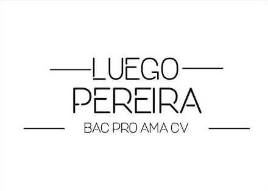

Création de mon logo personnel dans le cadre du BAC PRO Arts et Métiers de la Communication Visuelle. L’objectif était de concevoir une identité graphique qui me représente : moderne, épurée et professionnelle. La typographie géométrique et les traits horizontaux encadrant le nom créent un rendu à la fois élégant et mémorable.
